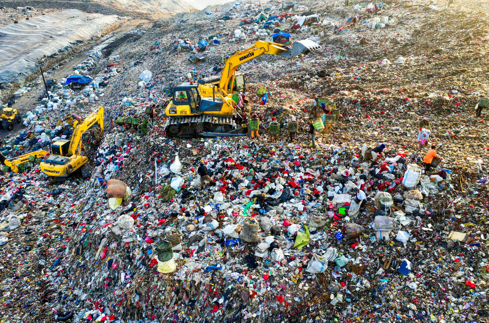
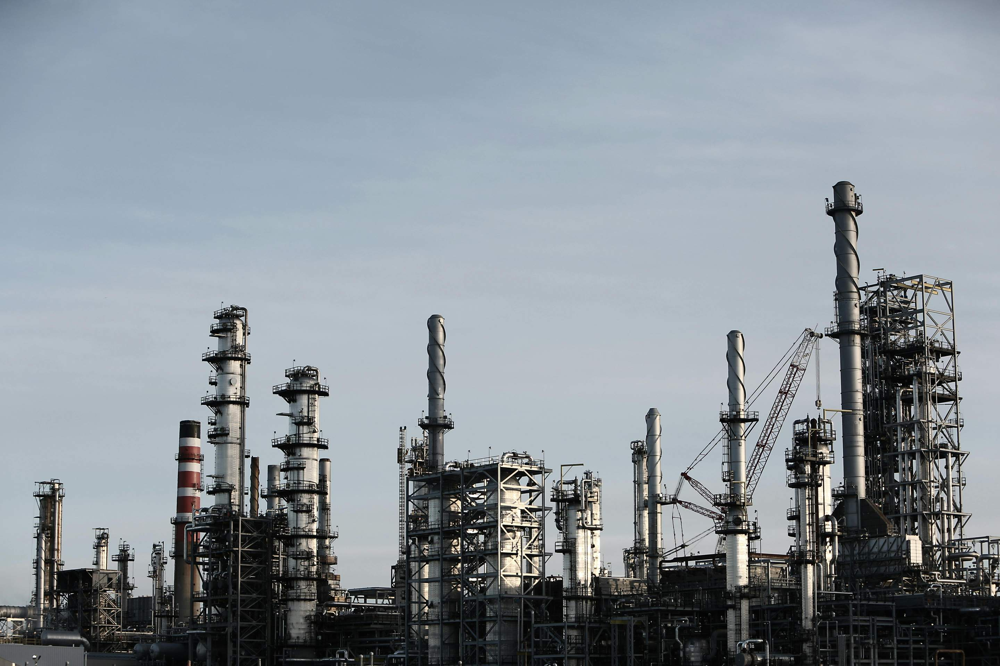
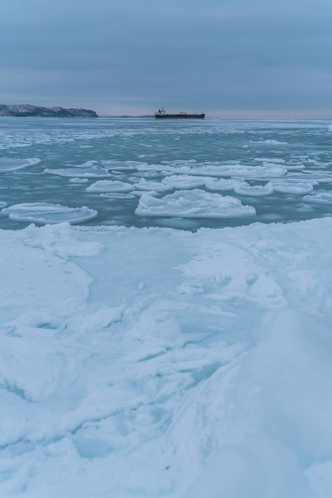
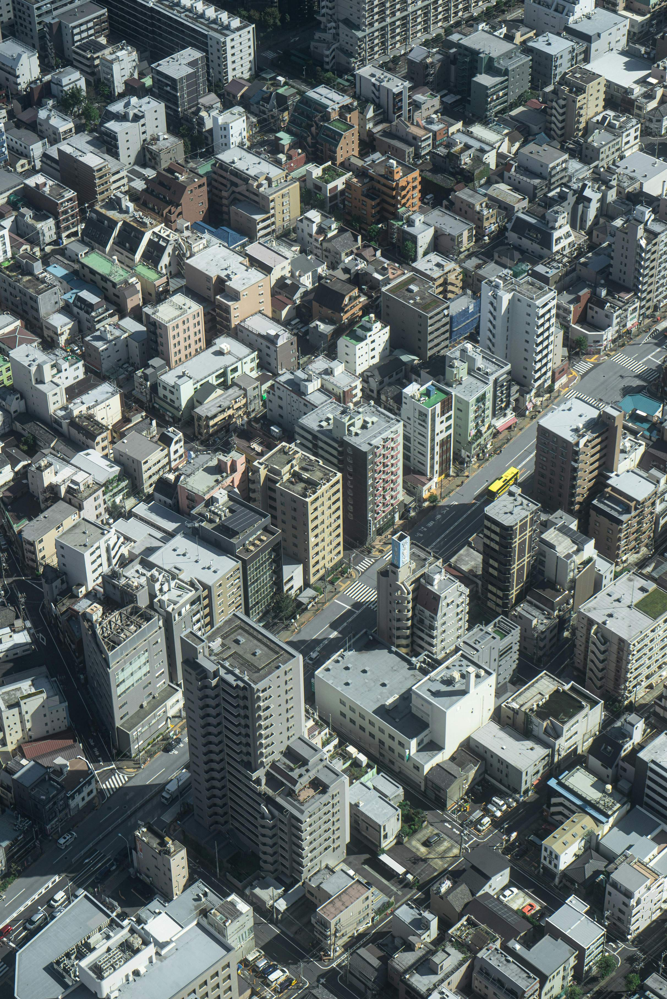
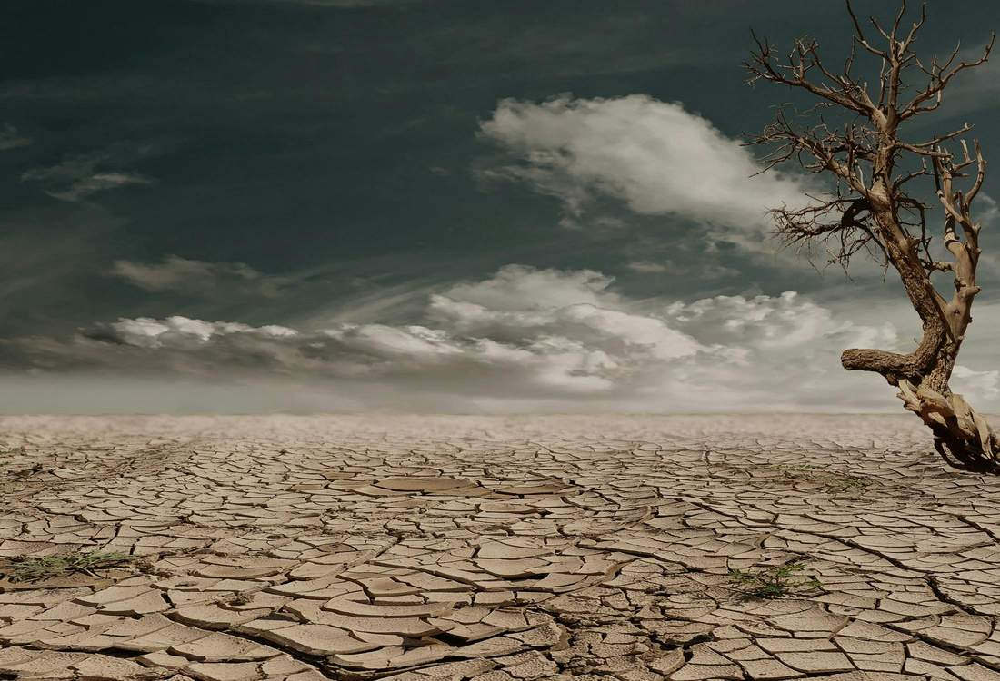

Climate Change
The Greenhouse Effect
The greenhouse effect is the primary cause of climate change, resulting from the accumulation of greenhouse gases like carbon dioxide and methane in the atmosphere. These gases trap heat that would otherwise escape from the Earth, leading to a rise in global temperatures. This temperature increase causes major changes in climate patterns, such as:
Longer drought periods in some regions
More frequent and intense hurricanes and storms due to changing atmospheric pressure patterns
Melting polar ice and rising sea levels
Additionally, the greenhouse effect leads to environmental disruptions such as threats to natural ecosystems and species extinction.

Burning Fossil Fuels
Fossil fuels like coal, oil, and natural gas are the primary source of carbon emissions. They are used in various sectors including electricity generation, transportation, and heavy industry. Burning fossil fuels results in:
Large-scale release of carbon dioxide, a major greenhouse gas
Release of other pollutants like sulfur dioxide and fine particles that affect air quality
Negative impacts on human health due to air pollution
Fossil fuel extraction and transport also contribute to methane emissions during mining and drilling operations.

Deforestation
Forests are one of the most important natural systems for storing carbon and absorbing carbon dioxide from the atmosphere. However, deforestation causes:
Release of carbon stored in trees and soil into the atmosphere
Reduced capacity of the Earth to absorb carbon dioxide
Loss of natural habitats for many organisms, leading to biodiversity degradation
Deforestation is often carried out to expand agricultural land or build new cities, worsening desertification and increasing flood risks.

Industrial Agriculture
Industrial agriculture heavily relies on chemical fertilizers and heavy machinery, leading to:
Emission of greenhouse gases like nitrous oxide and methane, especially from livestock farming
Soil degradation from excessive use of fertilizers and pesticides
Clearing forests for farmland, increasing carbon emissions
Industrial agriculture also consumes large amounts of water and energy, straining natural resources.

Waste Management
Waste, especially organic waste, is a major source of methane emissions as it decomposes in landfills. Additionally:
Improper waste incineration releases harmful pollutants like dioxins
Lack of recycling increases the depletion of natural resources
Promoting recycling and waste-to-energy conversion can help reduce emissions and improve resource management.

Transportation
The transportation sector heavily depends on fossil fuels, making it one of the largest sources of carbon emissions. Negative impacts include:
Large-scale release of carbon dioxide from cars and aircraft
Transitioning to sustainable public transport and using electric vehicles can reduce the environmental impact of transportation.
Industry & Construction
Heavy industry and construction significantly contribute to climate change due to:
Carbon dioxide emissions from cement and steel production
Large energy consumption, often from non-renewable sources
Using sustainable building techniques and improving energy efficiency can reduce emissions.

Melting Polar Ice
Melting ice causes rising sea levels, threatening coastal areas and increasing flood risks. Melting ice also:
Releases large amounts of methane trapped beneath the ice
Alters habitats of polar animals such as polar bears and seals.

Urbanization
Urbanization leads to:
Consumption of large areas of natural land
Increased emissions from energy and resource use
Destruction of natural habitats for living organisms
Sustainable urban planning can help reduce the environmental impact of urbanization.

Other Human Activities
Human activities like mining and overfishing cause ecosystem destruction and increased emissions. For example:
Mining releases gases like methane and destroys natural lands
Overfishing affects ecological balance and threatens food security.
